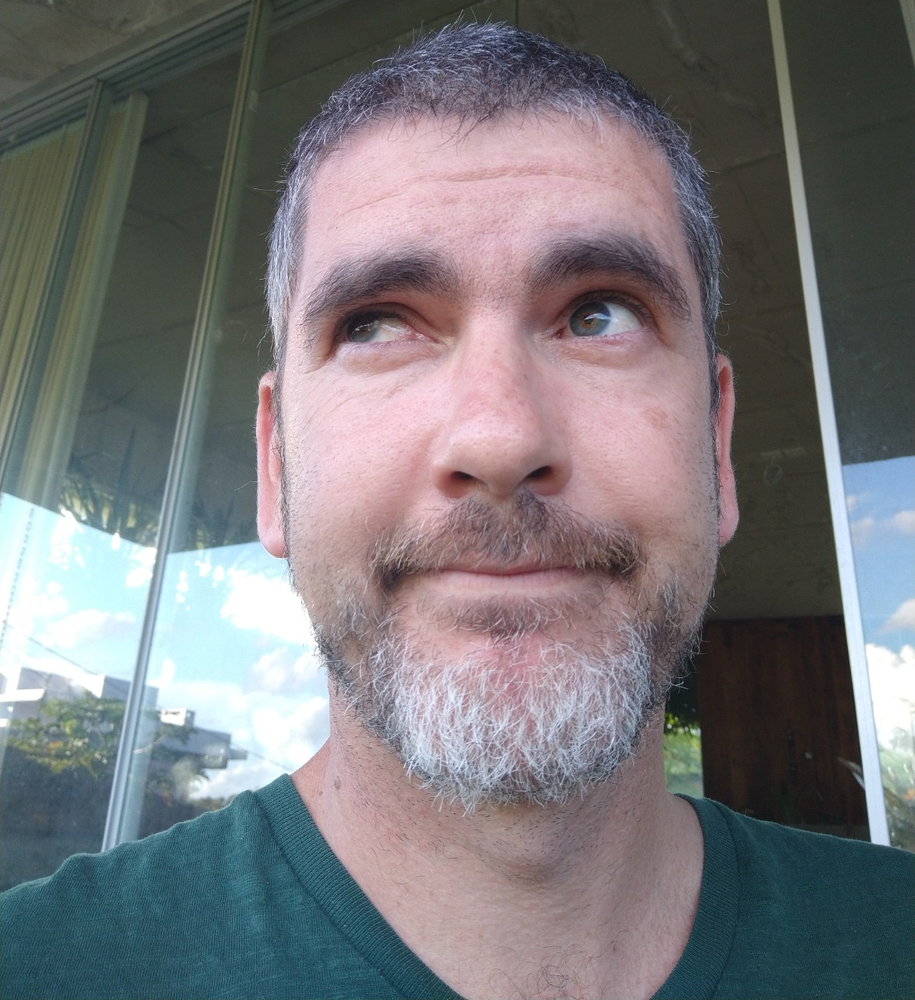
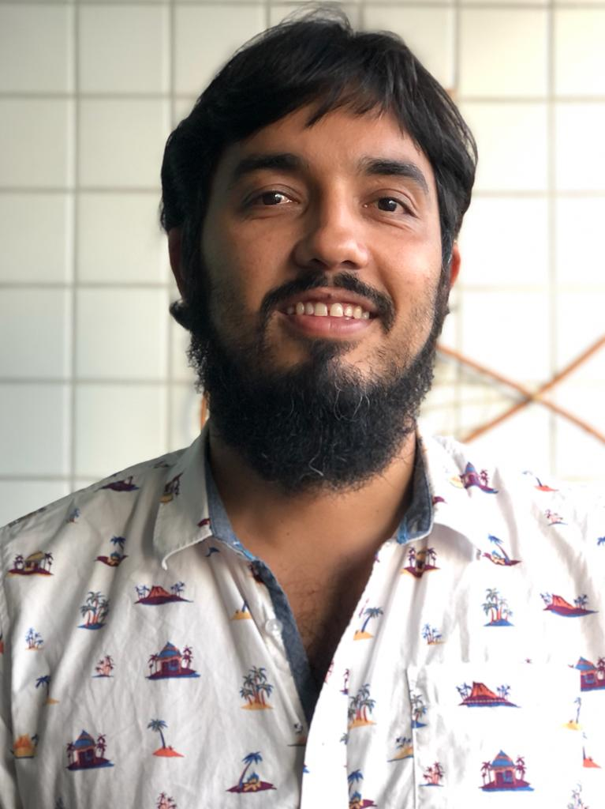
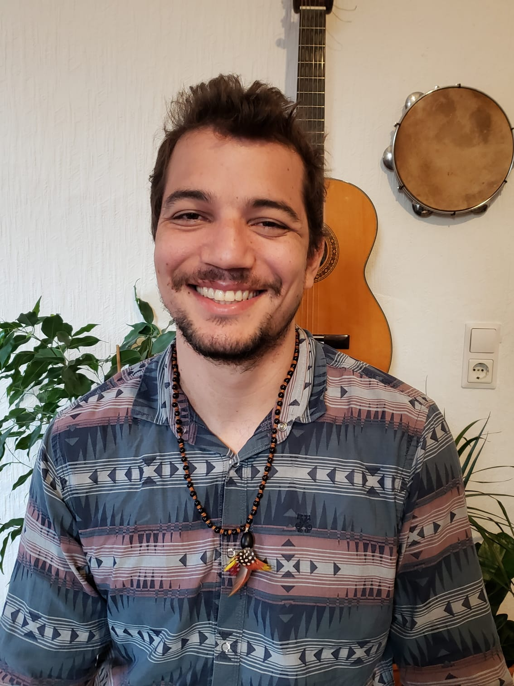
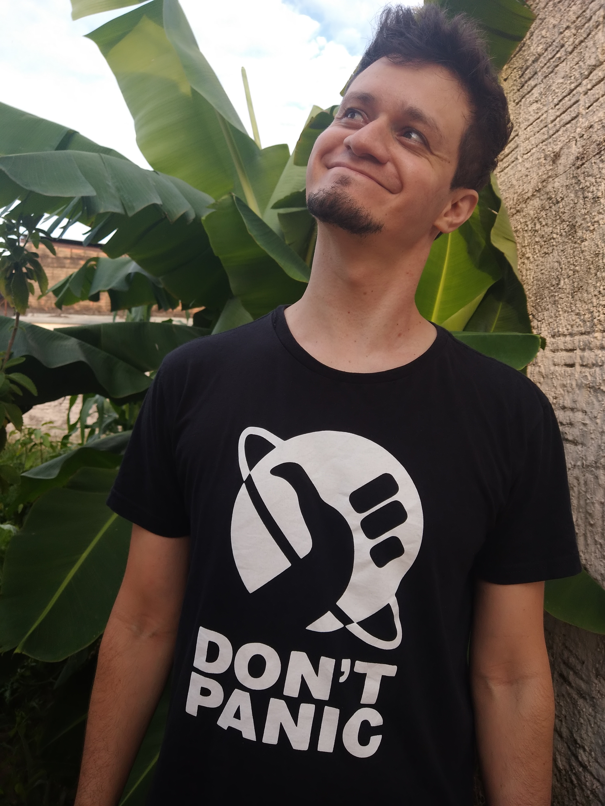

About the Authors
Fernando Rodrigues da Silva

An incorrigible joker from Barueri/SP, father of Ária, partner of Winter, caretaker of Filomena (cat), Zé (cat), Cenoura (dog), and Chica (dog), and an admirer of bars, travel, nature, beer, poker, basketball, and long conversations with friends. He holds a degree in Biological Sciences from UNESP–Assis and an M.Sc. and Ph.D. in Animal Biology from UNESP–São José do Rio Preto. He completed a sandwich Ph.D. at SUNY – College of Environmental Science and Forestry. He is currently an Associate Professor II in the Department of Environmental Sciences at UFSCar–Sorocaba, working in community ecology, metacommunities, macroecology, biogeography, and the natural history of amphibians.
Site: http://fernandoecologia.wix.com/fernandorodrigues
Thiago Gonçalves-Souza

From Cachoeiro do Itapemirim/ES, father of Lucas, partner of Natália, practitioner of Muay Thai and boxing, and an enthusiast of beer tasting. He holds a degree in Biological Sciences from Escola Superior São Francisco de Assis/ES and an M.Sc. and Ph.D. in Animal Biology from UNESP–São José do Rio Preto. He completed a sandwich Ph.D. at the University of Guelph (Canada) and a postdoctoral fellowship at UNICAMP. He is currently an Assistant Professor III in the Department of Biology at the Federal Rural University of Pernambuco, working in community ecology, functional ecology, macroecology, and metacommunities.
Site: https://thiagocalvesouza.wixsite.com/ecofun
Gustavo Brant Paterno

Composer of folk songs and a viola player, born in Ribeirão Preto/SP, father of Rudá and Maria Flor, and deeply passionate about Mila. He deeply admires the incredible diversity of life on Earth. He enjoys hiking, music, skateboarding, surfing, astrophotography, and programming. He is an ecologist by training, having earned his degree at UFRN (Natal), with an M.Sc. and Ph.D. in Ecology from the same institution. He completed a sandwich period at Macquarie University (Australia). He has a strong interest in open science and free software and is an ambassador of the Open Science Framework (OSF). He is currently a postdoctoral researcher at the Faculty of Forest Sciences and Forest Ecology at the University of Göttingen (Germany). His work lies at the interface of evolutionary ecology, biodiversity–ecosystem functioning, and restoration ecology.
Site: https://gustavopaterno.netlify.app/
Diogo Borges Provete
A true native of Espírito Santo, born in Bom Jesus do Norte/ES (actually registered there but born in Bom Jesus do Itabapoana/RJ, just across the bridge, because there was no hospital in ES :D), proud father of Manuela and devoted husband of Lilian. A fan of Belgian and English ales, as well as Chilean and Brazilian wines. He used to be a swimmer and a soccer player, and is a terrible chess player. Some say he enjoys books and comics. He holds a degree in Biological Sciences from the Federal University of Alfenas (MG), an M.Sc. in Animal Biology from UNESP–São José do Rio Preto, and a Ph.D. in Ecology and Evolution from the Federal University of Goiás. He is currently an Assistant Professor I at the Federal University of Mato Grosso do Sul. His research program seeks to integrate phenotypic evolution and micro- and macroevolutionary processes to understand patterns of species distribution at the metacommunity scale, especially in freshwater environments.
Site: http://diogoprovete.weebly.com
Maurício Humberto Vancine

From the countryside of Socorro/SP, father of Dudu, partner of Japa, and a lover of instrumental music, books, games, free software, programming, good beer, as well as a shot of cachaça and long conversations. More recently, he has been trying not to fall too often while learning to skateboard after turning 30. He holds a degree in Ecology and an M.Sc. in Zoology, both from UNESP–Rio Claro. He is currently a Ph.D. candidate in the Graduate Program in Ecology, Evolution and Biodiversity at UNESP–Rio Claro, working in spatial ecology, landscape ecology, ecological modeling, and amphibian ecology.